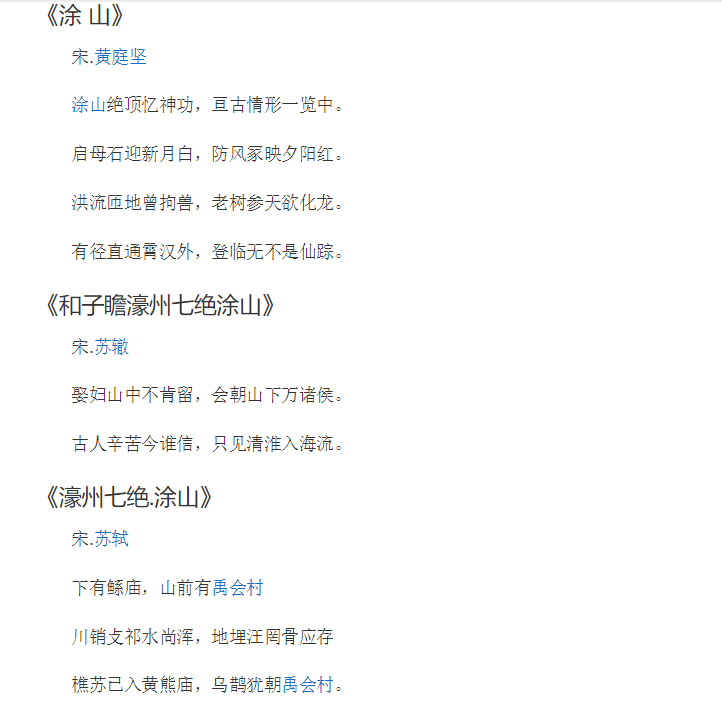

禹王宫
安徽涂山之巅有禹王宫，俗称禹庙。据历史记载禹王宫始建于公元前195年，距今已有2000多年的历史，是祭祀大禹和禹妻涂山氏之地。古禹王宫曾有五进院落、殿堂十座、钟楼、鼓楼等房屋40余间。历经战火后，损失严重，解放后经数次修缮，尚存二进，现已成为皖北地区较大的全真派道观，同时也是全国现存的、处于山峰顶端、规模最大的道教宫观。内含清道院、纯阳道院、长春道院、苍龙阁等殿堂；宫内有千年银杏两株，大可数围，非常罕见；西北角有瞭望台，登临将荆涂翠峰尽收眼底；西南有启母石（又名望夫石），如正襟危坐的妇人脉脉远望，相传望夫石为禹妻涂山氏望夫所化。禹王宫虽几废几兴，但依然是人们来来往往的朝拜之地。
简介地理情况
涂山禹王宫位于安徽省蚌埠市怀远县涂山山顶。
涂山，亦名当涂山，俗称东山，为古涂山国所在地，也是大禹娶妻及第一次大会诸侯的 地方。其山位于安徽省蚌埠市西郊，淮河东岸，与荆山隔河相峙。最高峰凤凰顶，海拔 338.7米。禹王宫就建于涂山绝顶之上。
起源与发展
禹王宫，俗称禹庙，或题为「有夏皇祖之庙」。它始建于汉高祖十二年(公元前195 年)。相传汉高祖刘邦统军镇压英布，路经涂山，游览了大禹遗迹，为使后人永远怀念 大禹治水之功，于是下令在涂山之巅建造禹庙。唐代时，禹王宫就已有道士居住。据载 ，武则天天授三年(692年)，有一位李慎羽道长，从长安引进石榴种植于当地。明 代对禹王宫进行了两次大规模的扩建。清乾隆年间又进行了两次大的维修。后因历史沧桑，殿宇大都已倾圮。近年来，当地政府拨款维修禹王宫，先后修复了部分屋舍和围墙 ，恢复了部分匾联诗刻绘画，并将其列入安徽省重点宫观和重点文物保护单位。
建筑布局
禹王宫现占地3400多平方米，坐北朝南，建筑按八卦方位排列，共有五进。第一进 九间房屋，中五间等高，覆以黄色琉璃瓦屋面；山门为三间，两边有客房。第二进为崇 德院，有拜厅三间，旧时为官吏朝觐禹王，置祭祀物品及休息的地方。原厅内挂有苏辙 、岳飞、黄庭坚等人的诗画，今已不存，惟东西墙壁嵌有数通碑记。东侧清静道院内有 三官殿一座。殿前原有钟鼓楼各一幢，已毁。西侧纯阳道院内有吕祖殿一座，殿内原有 明代木雕吕洞宾像，今已不存。殿北东壁间嵌有苏轼书《涂山诗》石刻。第三进是禹王 殿，为歇山顶式建筑，屋面原为绿色琉璃瓦，今覆以青瓦。殿内正中奉祀禹王像，皋陶 、伯益配祀左右。殿内还悬有木刻诗画数轴及楹联多幅。殿前东侧有明万历二十四年( 1596年)所建香亭一座，西侧有清乾隆二十九年(1764年)重修庙碑一通。大 殿东侧原建有慈航殿，今已不存。西侧为长春道院，建有邱祖殿。院西侧原建有苍龙阁 ，为两层木架结构，上层为藏经楼和历代禹王宫住持居室，下层为历代文人墨客下榻之 处。阁前现有一株垂乳银杏，雌雄同株，生机盎然，结果无核，堪称一绝。第四进为启母殿，奉祀禹之妻启之母━━涂山氏女。已毁于清末。殿前有两棵古银杏树，树内又生出 楮树，其枝丫盘蜒如龙，宋代文学家黄庭坚赞为「老树参天欲化龙」。第五进为上下两 层的殿堂，上层为玉皇殿，下层为玄武殿。殿西侧原有碧霞元君殿，已毁于地震，今残 垣断壁尚存。
涂山气候宜人，山中怪石嶙峋，清静幽雅，古迹名泉，分布其间。历代有诸多文人墨客 来此观光揽胜，如三国时的曹操父子、唐时的柳宗元、宋代的欧阳修、苏轼、黄庭坚、 朱熹、狄仁杰、宋濂、邓石如等，他们留下了众多赞美涂山和歌咏大禹功德的壮丽篇章，为涂山增色不少。
史料记载
《中国名胜词典》记载“禹王宫，别称禹王庙、涂山祠。在怀远县东南涂山之顶。《左传·哀公七年(即公元前488年)》：‘禹会诸侯于涂山。’一般即指此。后人为纪念大禹治水功绩，在此立庙。庙始建于唐之前，具体年代不详。原有3进，现尚存2进，院内有千年银杏两株，大可数围，拔地而起。西北有瞭望台，登临其上，涡、淮波涌，荆、涂翠峰，尽收眼底。西南有启母石（又名望夫石），正襟危坐如妇人原望，传为禹妻涂山氏望夫所化。西有圣泉、灵泉，清澈澄碧，四季不竭。……历代文人名宦如狄仁杰、柳宗元、吴文魁、苏轼、苏辙、宋濂、邓石如等，均来此游览并留下大量诗文铭刻。苏轼《濠州七绝·涂山》诗碑刻，今珍藏庙壁（没见到，或许已藏了起来）；邓石如‘旷览平城’等摩岩题字，仍清晰可见。近年已进行修葺，并在宫前树立高大的禹王塑像，供人瞻仰。每年农历三月二十八日，在此举行禹王庙会。”
涂山禹王宫诗文 | 建于： | 公元前195年 |
| 海拔： | 338.7米 |
| 适宜旅游季节： | 春秋较佳 |